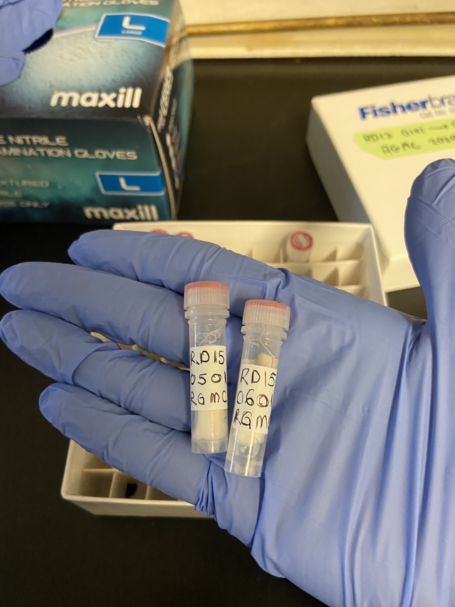
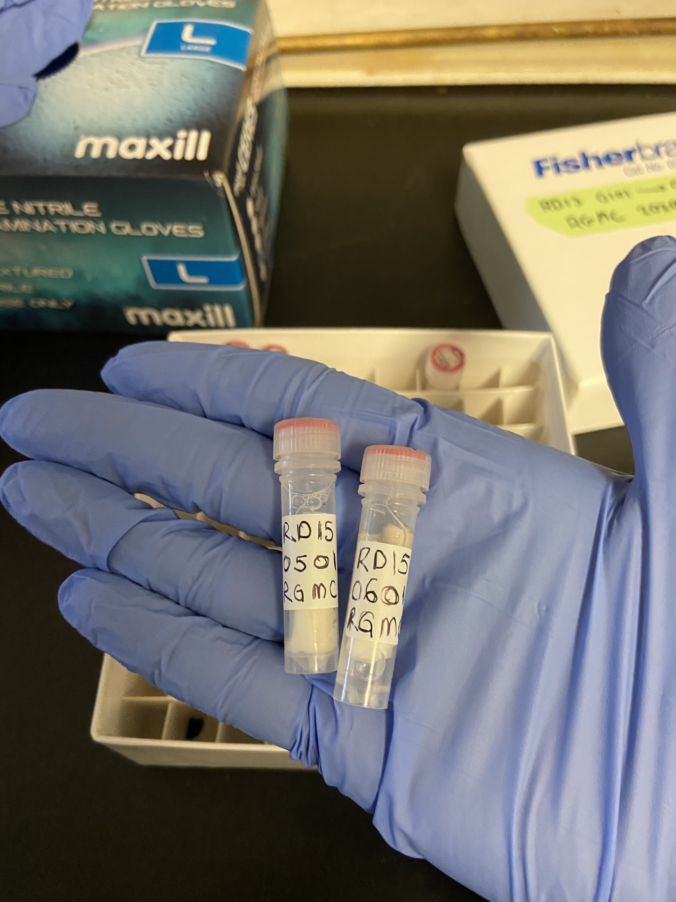

Research
eDNA Assays for Threatened, Invasive, and Ecologically Relevant Atlantic Canada Freshwater Fishes
I started my Master of Science degree in January at the University of New Brunswick in Dr. Scott Pavey's lab. During my MSc research, I developed eDNA quantitative polymerase chain reaction (qPCR) assays using the Cytochrome B gene for 20 freshwater fish found in Atlantic Canada. The use of qPCR relies on species-specific primers and probes that are designed complementary to unique regions of the target species DNA. Using eDNA tools to supplement data from traditional sampling techniques holds a lot of promise to monitor freshwater fishes, however requires these assays to be rigorously tested and validated.
I developed rigorous in silico eDNA assay development and in vitro testing methodologies throughout my project. I observed species-specificity for three of the 20 assays from my study, with the other 17 being genus-specific. I also I conducted eDNA field work at Fundy National Park, home of the Inner Bay of Fundy Atlantic Salmon. I applied assays I developed to eDNA samples taken at Fundy to prove their efficacy and utility as a monitoring tool for five species found in Upper Salmon and Point Wolfe River within Fundy National Park.
My work adds to the rapid and expansive research for eDNA-based technology as a biodiversity monitoring and quantification tool. Further, the 20 target species from our work have broad geographic ranges in North America, spanning outside of Atlantic Canada. The assays we developed and optimized can be used for their detection through eDNA, in many different contexts and applications locally and internationally. qPCR assays are an essential tool used to detect species when conducting eDNA detection studies. The findings from our study will incentivize continued implementation of eDNA-based monitoring techniques to assess the status of wildlife populations and habitats—empowering scientists and researchers to develop timely and efficient conservation strategies for years to come.
Stay tuned for the upcoming manuscript, which is in preparation!
 
